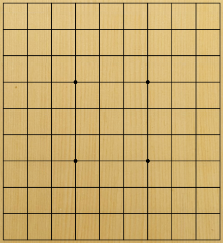

棋樹（大樹）ビジュアライザー
保存した全棋譜を初手から統合し、プロ棋譜と自分の研究ルートを色分け表示。気になる分岐ノードをクリックしてそのまま検討盤へジャンプできます。
取り込んだ将棋の棋譜や自分の研究手順を1本の巨大な樹形図に統合し、AI検討・変化分岐・実戦トレーニング・棋譜ライブラリ管理までブラウザひとつで完結できる将棋研究アプリです。
「集める・調べる・繋げる・鍛える」のすべてをひとつのワークスペースに。
保存した全棋譜を初手から統合し、プロ棋譜と自分の研究ルートを色分け表示。気になる分岐ノードをクリックしてそのまま検討盤へジャンプできます。
内蔵 Fairy-Stockfish による候補手・読み筋・形勢グラフを表示。途中の局面で別の手を指すと、上書きせず自動で変化分岐ツリーを作成します。
KIF / KI2 / CSA / JKF を一括取り込み（自動エンコード判別・重複防止）。複合フィルタ、マイフィルター、タグ辞書、対局者別の戦績集計を備えています。
途中局面からの AIスパーリング対局、悪手局面の次の一手クイズ、.sfen/.kif 詰将棋（棋譜からの詰み自動抽出付き）、棋譜なぞりに対応。
1文字/2文字駒や盤面テーマに加え、自作 SVG/PNG 画像や駒音、.nnue 評価関数、定跡DB（.db/.sbk）、Windows版でのローカル .exe エンジン連携が可能です。
棋譜や設定はお使いの端末・ブラウザ内に自動保存。スマホの「ホーム画面に追加」や PC Chrome/Edge のインストールでオフラインアプリとして動きます。
アカウント登録やインストールは不要。すぐに使い始められます。
右上の「棋譜を取り込む」やモバイル下部の「取込」から、テキスト貼り付け・複数ファイル・フォルダごと一括で登録できます。まずは内蔵のサンプル棋譜で1クリック試用も可能です。
📥 取込画面を開く →「AI解析」タブで候補手・読み筋・形勢推移グラフを確認しながら、別手順を指して変化枝を作成します。「分割研究」をオンにすると横に定跡ノートや定跡DBを並べて調べられます。
♟️ 検討盤を開く →保存した棋譜はライブラリで検索・整理できるほか、アプリ全体の「棋樹」に自動で合流し、あなただけの定跡・戦法ツリーが成長していきます。
🌳 棋樹を開く →通常の手軽なバックアップから、自前クラウド構築・GitHub Actions 解析・画像自作仕様まで。
「設定 → データ管理」から全棋譜・設定・クイズ・復習履歴を1ファイルに書き出し、別端末で重複スキップ付きで安全に復元できます。
PC版 Chrome / Edge では Google Drive・OneDrive・Dropbox 等の共有フォルダを指定するだけで、起動時同期＆終了時自動バックアップが働きます。
他人のサーバーに棋譜を預けず、ご自身で用意した Firebase 無料枠を使って PC とスマホを自動同期・クラウド解析連携できます。
nonamini.github.io（または独自ホスト先）を追加します。
自前 Firebase でログインすると表示される「☁️ クラウド解析」は、フォーク先のリポジトリでエンジンを動かして解析結果を書き戻します。
FIREBASE_SERVICE_ACCOUNT_KEY：Firebase サービスアカウント秘密鍵 JSONUSI_ENGINE_BINARY_URL / USI_ENGINE_BINARY_SHA256：利用する Linux x64 向け USI エンジンバイナリの URL と SHA-256USI_EVAL_URL / USI_EVAL_SHA256：評価関数ファイルの URL と SHA-256（任意）Kifu Analysis Batch を手動実行すると解析結果が自動で戻ります。
「設定 → 表示・外観」から独自の SVG / PNG 画像をアップロードして全画面に反映できます。以下のテンプレートをダウンロードしてそのまま差し替え・編集にご利用ください。

縦横比 約 11:12（439×480）で表示されます。9×9のマス目線・星・外周の余白を含めて画像内に描くため、上のテンプレートを土台にすると駒がぴったり合います。
不要です。完全無料（GNU GPL-3.0）で公開しており、アクセスした瞬間からすべての基本機能（棋譜取込・棋樹・AI検討・詰将棋・クイズ）をログインなしでご利用いただけます。
はい。iPhone/Android はブラウザの「ホーム画面に追加」、PC の Chrome / Edge はアドレスバー右端の「インストール」アイコンから、オフライン対応のスタンドアロンアプリとして導入できます。
棋譜・ノート・設定はすべてお使いのブラウザ内に保存されます。Web公開版ではアプリ改善のため Cookie 不使用の匿名利用統計（Umami Cloud：閲覧画面と機能ごとの実行回数・取り込み件数のみ）を計測していますが、棋譜の内容・対局者名・ファイル名・個人情報は一切送信されません。
本アプリのソースコードは GNU GPL-3.0 で公開されています。内蔵のブラウザAIには Fairy-Stockfish (GPL-3.0)、デフォルト盤面・駒 SVG には sunfish-shogi / shogi-images（CC0 1.0）の二次加工画像を使用しています。ユーザーが任意で読み込む外部棋譜・定跡DB・NNUE・ローカルUSIエンジンは同梱しておらず、各配布元の規約に従ってご利用ください。